Abstract
We study whether small, locally runnable language models can explain laboratory reports and prescriptions safely in Bengali, and build ShasthoSathi, an offline pipeline with four stages: hybrid de-identification, code-mixed medicine recognition, rule-based abnormality flagging and explanation. On held-out synthetic reports and real clinical text with injected identifiers, combining format rules with OpenMed PII models and protecting fine-tuned medicine spans reduced the identifier leak from 10.3% to 0% (95% upper bound 0.16%) while limiting clinical over-redaction to 6.9% on real text. Fine-tuning on Bangla-HealthNER raised Bengali-script medicine recall from below 10% to 81%, and INT8 export reduced the tagger to 106 MB with a 0.09-point F1 loss. Four instruction-tuned models (0.5B–3.8B) flipped high/low in 17–42% of abnormal results when reading reports directly; a rule-computed fact sheet and a strict prompt raised Qwen3-1.7B to 97% correct and 96% safe in English (validated LLM judge, κ = 0.80). In Bengali every model failed: a blinded native-speaker check rated a deterministic template 100% correct versus 60% for the best model. We also show that standard dynamic INT8 quantization silently destroys a Bengali PII model's ability to find unlabelled names (100% missed), whereas quantizing only the embedding table preserves full accuracy at half the size.
Research questions
Can rules + small PII models de-identify code-mixed Bengali reports without erasing the medicines and lab values the patient needs?
Can a fine-tuned encoder find medicines written in Bengali script as well as in Latin script?
When do small LLMs explain lab results correctly and safely, in English and in Bengali?
Do the models survive quantization and export to a phone and a browser, with identical behaviour?
Overview
Two design rules follow from the experiments: an LLM never decides whether a value is abnormal (rules compare each value with the report's own range), and an LLM never sees the report (only an identifier-free fact sheet).
① Read
② Protect
③ Explain
Data & Method
Data
No licensed or data-use-agreement corpora were used. Bangla-HealthNER (31,783 posts, seven entity types) trains and tests the medicine tagger. Synthetic reports (Bangladeshi lab reports, mixed and English prescriptions, Bengali notes) carry gold offsets; the held-out set uses a vocabulary disjoint from development, so rules cannot memorise names. Real text from PMC-Patients and HealthNER is wrapped with injected identifiers, and a harder free-text set hides names inside sentences without any field label.
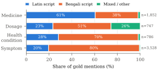
Method in four steps
- Hybrid de-identification. Format rules ∪ OpenMed PII models routed by script. Fine-tuned medicine/dosage spans and parsed lab rows are subtracted from model spans (never from rule spans), then trimmed. Threshold: lowest leak with clinical over-redaction ≤ 10% on dev.
- Code-mixed medicine NER. BanglaBERT, BanglishBERT, XLM-R and the OpenMed Bengali encoder fine-tuned on Bangla-HealthNER (BIO on first sub-word; three seeds), plus LoRA variants. Exported to ONNX and INT8.
- Rule-grounded explanation. The parser flags each value against the report's own range. A bilingual template is the baseline; four small LLMs are compared under free, grounded (fact sheet) and strict prompts, each output passing a number + coverage gate.
- Evaluation. Leak / over-redaction with bootstrap CIs and McNemar; exact-span F1 by script; a validated LLM judge (rubric v2, κ = 0.80) and a blinded native-speaker check; quantization tested per language on unlabelled names.
Require image I or text x; language ℓ ∈ {en, bn}; threshold τ
if input is an image then
W ← OCR(I) ▷ ML Kit or Tesseract
x ← RebuildRows(W) ▷ slope-corrected rows
user confirms or edits x against I
x ← Normalize(x) ▷ Bengali digits, spaces
S_R ← RuleSpans(x)
S_M ← ∪_{m ∈ Route(x)} Group(Tag_m(x), τ)
P ← NER_med(x) ∪ LabRows(x) ▷ protected spans
S ← Merge(S_R ∪ Trim(S_M ∖ P))
x̃ ← Replace(x, S) ▷ [NAME], [PHONE] …
F ← {(t, v, u, r, Flag(v, r))} from ParseLabs(x̃)
y ← Template(F, ℓ)
if ℓ = en and LLM enabled then
y′ ← LLM(StrictPrompt(F)) ▷ never sees x
if Numbers(y′) ⊆ Numbers(F) and every abnormal t, v ∈ y′
then y ← y′
return x̃, F, y
Require FP32 models M_bn, M_en; variants 𝒱; aggregations 𝒜;
thresholds 𝒯; dev sets D, D_free; c_max = o_max = 0.10; B = 700 MB
for ℓ ∈ {bn, en}, v ∈ 𝒱 do
Q_ℓ,v ← QuantizeDynamic(M_ℓ, v)
check tokenizer parity and max |z_Q − z_FP32|
𝒞 ← ∅
for (v_bn, v_en, a, τ) ∈ 𝒱² × 𝒜 × 𝒯 do
run the privacy stage on D, and models only on D_free
λ ← free-text names missed; c ← clinical over-redaction
o ← other text hidden
if c ≤ c_max and o ≤ o_max and |Q_bn| + |Q_en| ≤ B then
𝒞 ← 𝒞 ∪ {(λ, leak_D, o, ·)}
return argmin_𝒞 (λ, leak_D, o) ▷ lexicographicPreprocessing & cleaning
- Word segmentation & label alignment: whitespace words, BIO tag on the first sub-word (others −100); 256 sub-words for training; on device, overlapping windows of 254 with stride 64.
- Script profiling: each mention classified Latin / Bengali / mixed by Unicode block (U+0980–U+09FF).
- Numeric normalisation: Bengali digits → ASCII, decimal commas, Unicode spaces — identical in parser and gate.
- Span cleaning: merge, subtract protected spans, trim whitespace/punctuation but never letters or Bengali vowel signs.
- Gold integrity: the generator asserts that every offset reproduces its surface string; OCR text whitespace-normalised before CER.
Quantization techniques
Post-training dynamic quantization (ONNX Runtime): INT8 weights, activations quantized on the fly — no calibration data, which does not exist for Bengali clinical text with identifiers. Six variants per language:
Embedding-only stores the 250k-token embedding table in 8 bits but quantizes no activations, so every matrix product is exact. Selected per language with Algorithm 2.
Results
OpenMed models alone leaked 10.3% of identifiers on held-out reports, mostly facility names and record IDs, which rules catch completely; rules alone missed every name and date. Their union cut leaks to 0.6% / 0.2% (McNemar 148 vs 0 and 107 vs 0 discordant documents). On real Bengali posts the PII models also erased 36.9% of medicine and dosage spans; protection with the fine-tuned tagger brought this to 6.2% with no added leak, allowing a lower threshold: no leak on either test set with 6.9% clinical over-redaction.
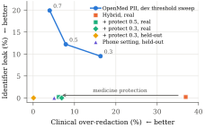
Appendix: PII models alone on the development set (E1)
Zero-shot OpenMed clinical NER found 70–75% of Latin-script medicines but only 0–9% of Bengali-script ones. Fine-tuning closed the gap: Bengali-script medicine recall reached 81–82%. The three full models are within one SD (Welch t ≈ 1.8) and 1.7–2.6 points above the published 56.13. BanglishBERT, with 40% of the parameters, was exported: INT8 ONNX is 4× smaller, 2.7× faster on CPU, 99.1% of word tags unchanged.
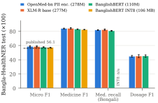
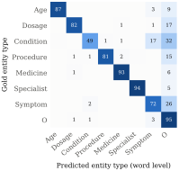
Medicine (93% of words), Specialist (95%) and Age (87%) are reliable. Only 0.9% of Medicine words got another type, so protection fails by omission — which the rule-based lab-row protection partly covers.
LLMs must not decide abnormality. Reading reports directly, every model stated the wrong direction for 17–42% of abnormal results. Correct is not safe: with the fact sheet, the best models still added a misleading interpretation in about a third of outputs; the strict prompt raised Qwen3-1.7B's safety from 60% to 96%. Bengali fails: 55–99% of abnormal results went unmentioned under free/grounded prompts, up to 100% of outputs looped at 1,024 tokens, and the native rater preferred the template on all 30 reports.
Judged % of 100 held-out outputs. Dashed line = deterministic template. Missing bars: condition not run for that model.
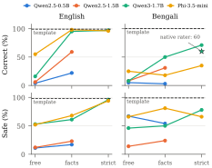
Full judged-quality table (Table V)
Judge: Qwen2.5-14B-Instruct, rubric v2 (extract the stated status, code scores it). A first holistic rubric failed validation (κ = 0.00). Judge vs native rater: 82% agreement on correctness, 87% on safety, but it over-rated Bengali clarity (4.21 vs 2.27) — Bengali quality is therefore measured by people.
With plain dynamic INT8 PII models the phone pipeline leaked 16.5% on held-out reports. Format rules hid the cause on labelled test sets, so we used the free-text set where only the model can find a name: the English model tolerated INT8 (1.5% missed = FP32), but the Bengali model missed every unlabelled name. Range-reduced and attention-excluded variants recovered only partly (14–26%); embedding-only INT8 matched FP32 exactly at half the size.
{"ner":"int8", "pii":{"bn":"int8emb","en":"int8noattn"}, "agg":"mean", "threshold":0.1, "rules_v2":true}
689 MB · 0.0% leak held-out and real · 1.0% free text (Bengali 0%) · 181 ms / report on 4 CPU threads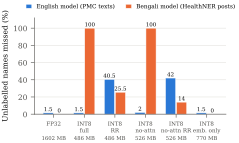
Transparency: the 700 MB budget was fixed after an earlier tuning round, and a round that selected settings hiding 58% of all text was rejected; both are reported.
Clean printed pages had a 1.6% character error rate, yet only 65% of lab rows were read exactly: single-character errors hit units (x10^9/L → x1049/L) and test names (25-OH → 25-0H), and OCR errors broke format rules (Dr. → pr., a dropped leading zero). OCR almost never reverses a flag (1 of 198 rows) — it causes rows to be missed, which the app reports as “not read”. This is why the human check step is mandatory.
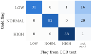
One core, three implementations
The rules, parser, templates, gate, redaction and model-output decoding are generated or ported from the Python reference and checked against golden files on every build — on the JVM, on the phone (built-in self-test), in Node and in the browser.
The products: Android app & web app
Same core, same privacy guarantee. Separate Bengali and English interfaces, a human check before every explanation, and provenance labels on every result.
Runs entirely in your browser
- Tesseract.js OCR, rules, optional ONNX privacy models — the report never leaves the tab (CSP: self only).
- Interactive donut and range gauges; correct a misread value and the rules re-flag it.
- Original and protected text side by side: show a hidden part again or hide any selection.
- My reports: passphrase-encrypted history (AES-GCM) with pseudonymous person IDs and per-test trends.
- Doctor-visit summary: printable, no personal details.
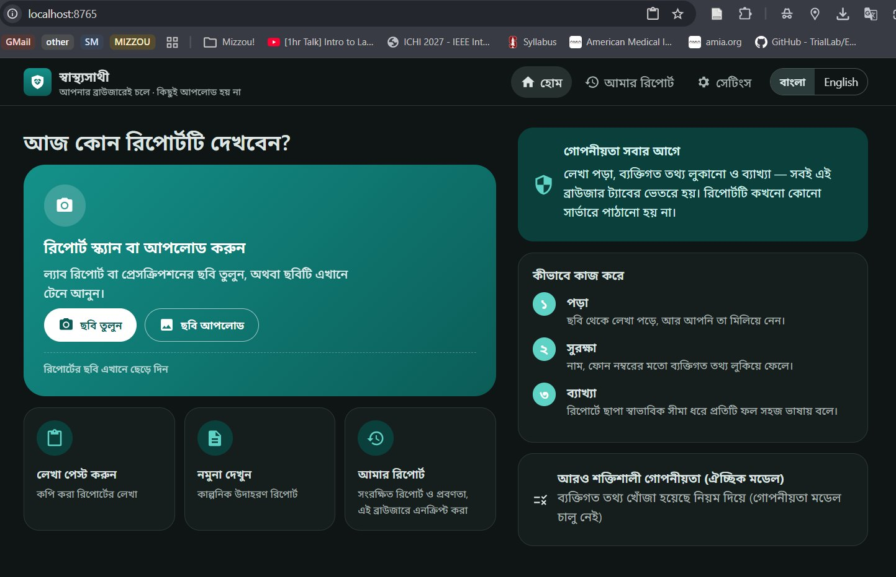
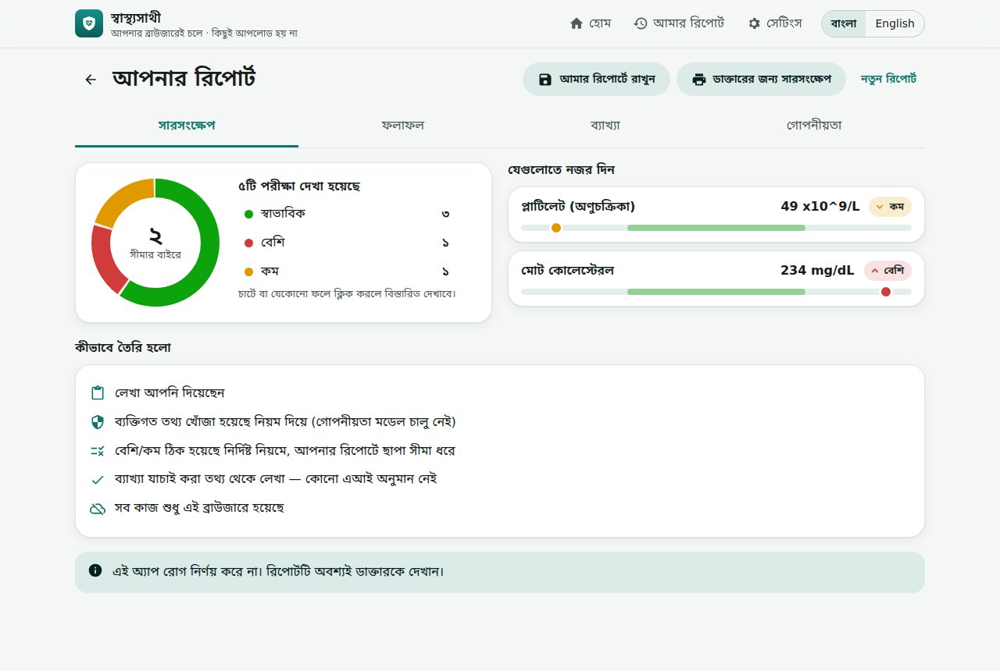
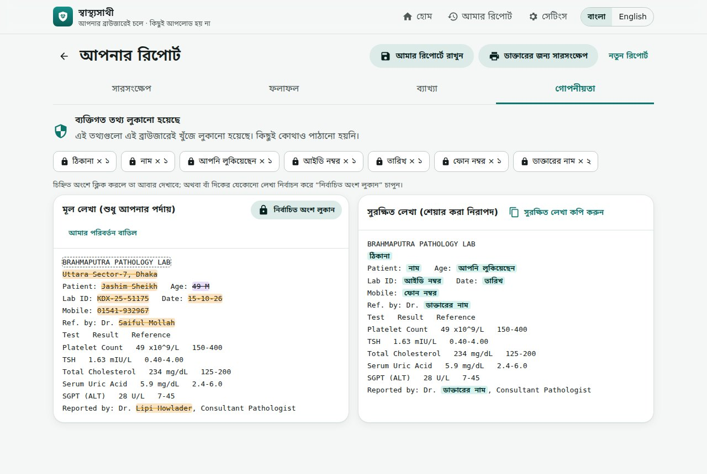
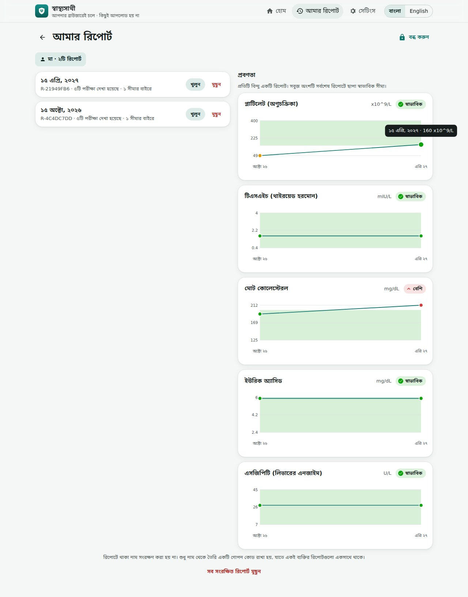
Offline by construction
- No INTERNET permission — Android itself blocks any upload; no camera or storage permission; photo deleted after reading.
- ML Kit (Latin) + Tesseract (ben+eng) with tilt-corrected row rebuilding.
- Kotlin core byte-identical to Python on 909 texts; on-phone self-test and speed test.
- Splash, adaptive icon, first-launch language choice, tap-for-detail sheets, value correction, feedback.
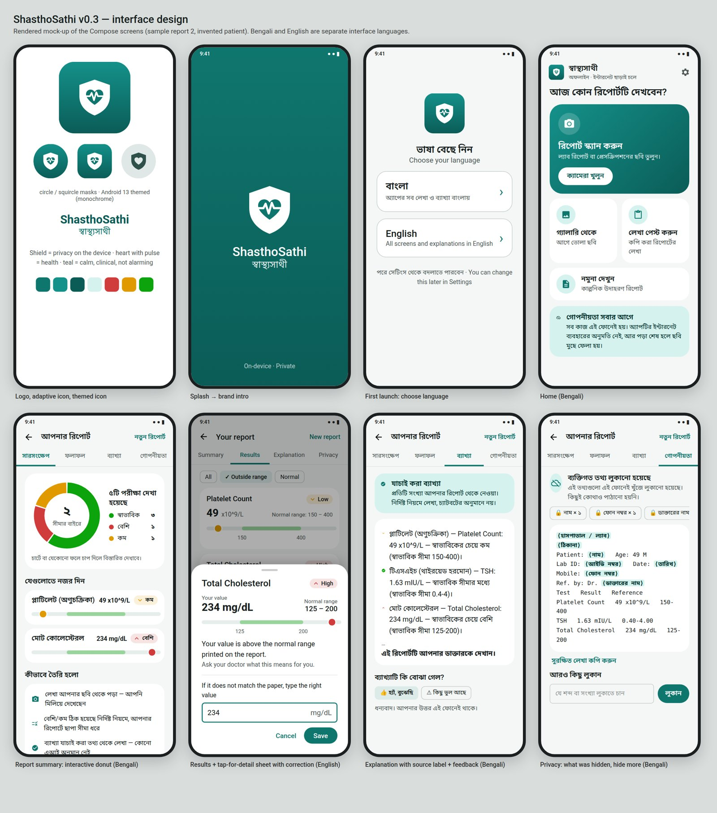
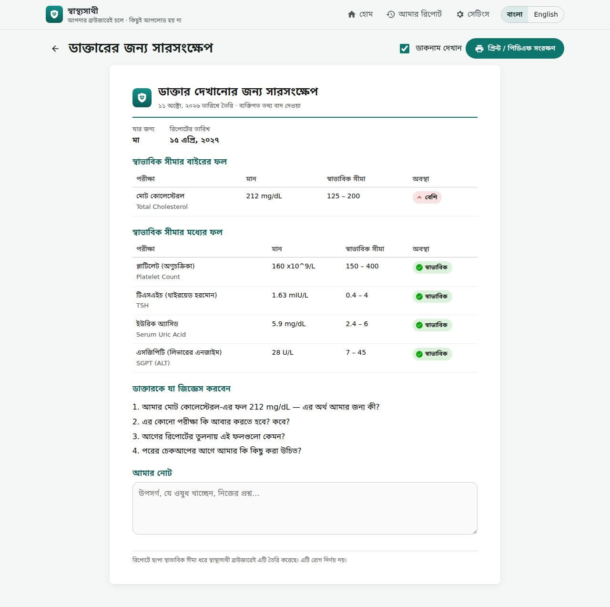
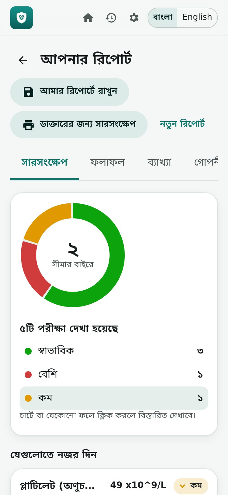
Live demo
The real pipeline core (format rules, lab parser, flags, template) running in this page. Nothing is sent anywhere. Samples are invented; the full app adds OCR, the optional privacy models and history.
Report text (editable)
Protected text
Results & explanation
Why template-first? Failure cases
Illustrative reconstructions of the failure types observed in E6/E6c and the E8 OCR study (see Table IV), with the safeguard that handles each.
Limitations & ethics
- Identifiers and reports are synthetic or injected; real Bangladeshi reports, West Bengal and diaspora documents and handwriting were not tested.
- One native rater, who is also the author; the template's fixed pattern makes blinding partial. No clinician reviewed explanations.
- The judge-validation reference was produced by another LLM (Claude).
- The parser covers tabular lab rows only; v2 header rules and the 700 MB budget were set after earlier experiments (reported).
- Phone timings come from a flagship device; phone OCR results are pending.
Main contributions
- Hybrid de-identification — rules ∪ script-routed OpenMed PII models, minus fine-tuned medicine spans, so clinical content survives.
- Code-mixed medicine tagger — Bengali-script medicine recall 81%, exported to a 106 MB INT8 model.
- Grounded generation study — four small LLMs × three prompt conditions × two languages, validated judge and native-speaker check.
- Quantization fragility — dynamic INT8 disables unlabelled-name detection in a Bengali PII model; embedding-only INT8 avoids it.
- Verified deployment — Android and in-browser implementations byte-identical to the Python reference on 2,327 golden cases.
BibTeX
@misc{dey2026shasthosathi,
title = {Fact-Grounded Small Language Models and Code-Mixed Clinical NER
for Privacy-Preserving On-Device Explanation of Bengali Health Reports},
author = {Dey, Samrat Kumar},
year = {2026},
institution = {Institute for Data Science and Informatics, University of Missouri},
note = {ShasthoSathi project},
url = {https://github.com/cimilab/Bangla_SusthoSathi}
}